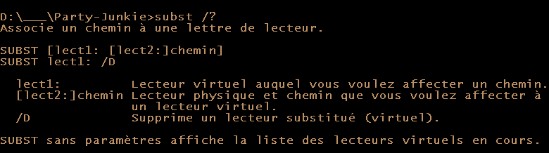

Explication
Pour obtenir une meilleure flexibilitée dans la compilation,
ansi que de permettre l'utilisation d'un éditeur de code externe,
mais aussi d'autres raisons
*cough* *cough* Vusial Studio Crash *cough* *cough*,
nous allons voir comment former notre prope environement de développement.
Notez que c'est la façon dont JE le fais.
Vous n'êtes pas obligé de tout suivre à la lettre.
Le faux disque dur
Le chemin vers un dique dur est très court: "C:/" ou encore "D:/".
Un truc que j'aime faire c'est prendre le dossier dans lequel
je vais faire mon développement et lui attribuer une lettre:
pour celà existe la commande "subst":

Dans mon cas, ce sera subst W: "D:\\Party Junkie".
Pour ceux qui ne savent pas ouvrir une invite de commande:
- Appuyer sur les touches: Windows+R
- Taper: cmd
- Appuyer sur Entrer
- ????
- PROFIT!!!
L'éditeur de code
Comme éditeur de code, je vais utiliser
Emacs
dont le fichier de configuration sera mis à disposition.
Mais strictement rien ne vous empêche d'utiliser un autre éditeur,
ou encore d'utiliser visual studio commme éditeur de code.
//NOTE(doc):
// mkdir misc
// cp .emacs
Créer des dossiers
cd w:
mkdir misc
mkdir code
mkdir bin
//TODO(doc): fix google coloartion code to include batch
Créer des dossiers
#include <windows.h>
int CALLBACK
WinMain(HINSTANCE Instance,
HINSTANCE PrevInstance,
LPSTR CmdLine,
int CmdShow){
return(0);
}
//TODO(doc): fix google coloartion code to include windows specific stuff
La compilation
La méthode que je vais présenter choque et horifie absoluement tous
les dévelopeurs, et je m'en excuse.
Mais vous savez quoi ? C'est comme ça que je build mes trucs et je ne vais
pas changer de méthode.
A la base de mon project je crée un "build.bat".

Un .bat est un fichier de script sous windows qui peut faire ce que
l'invite de commande peut faire.
Pour l'info, la plupart des développeurs utilise un make-system ou
build-system, tel que
GNU make,
Ninja ou encore
CMake.
Et genéralement les développeurs aiment utiliser des outils de build,
lançant des outils de build, lançant des outils de build,
lançant des scripts, lançant d'autres outils de build; et avec tout ça
des outils d'analyse d'outils de build pour lancer
des outils d'optimisation des outils de build, ainsi que
des outils d'optimisation d'outils d'optimisation des outils de build,
et toute cette folie...
Et ils aiment ça.